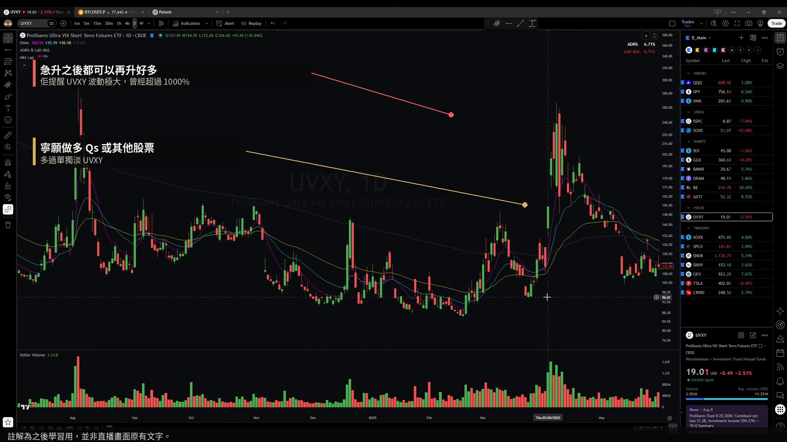

概要
可以同意有啲，但淡 UVXY 風險好大
1:40:10 聊天室話 UVXY 急升之後適合淡。1:40:10 畫面可能仲係其他圖，約 1:40:39 先到 UVXY 日線。佢說某程度上同意，但提醒好危險、好波動：即使已經升過 100%，都可以再升 36%；2020 年呢段 UVXY 走勢超過 1000%。所以要小心，可能要同大市對沖；但佢覺得做多 Qs 或者其他股票，會好過淡 UVXY。
圖一 · 主圖
UVXY 日線：急升之後仍然可以再升好多
直播 1:40:39

原話
UVXY is also a suitable candidate for short, especially after it ran a bit parabolic. At some degree I agree, but don't forget like how risky or how volatile UVXY could be. Even you short after it ran up by a hundred percent, it can still go up for another 36%, and back in 2020, this move on UVXY is more than 1,000%. So I think you have to be a little bit careful, and I think it's a little bit too dangerous to do that, and maybe you have to pair it with like the general market as well. But I think like going longs on the Qs or the other stocks will be better than shorting the UVXY.
UVXY 急升一段之後，亦適合做淡。某程度上我同意，但唔好忘記 UVXY 可以有幾危險、幾波動。即使你喺佢已經升咗 100% 之後先淡，佢都可以再升 36%；而 2020 年 UVXY 呢段走勢超過 1000%。所以要小心啲，我覺咁做有啲太危險，或者要同大市一齊配對。但我覺得做多 Qs 或者其他股票，會好過淡 UVXY。
點樣讀
日線見到一段急升。佢沒有否定「急升後可以考慮淡」呢個想法，但把重點放喺波動同尾段仍然可以再升好多。
36% 同 1000% 係佢用來說明風險嘅原話，本頁唔當預測，亦唔寫成建議倉位。最後一句係比較：寧願做多 Qs 或其他股票，多過單獨淡 UVXY。
附註
注意事項
- 「適合淡」呢句係發問者提出；佢只係某程度上同意，並隨即強調風險。
- 1:40:10 開始答問時畫面可能仲未切到 UVXY；有分析意思嘅圖約 1:40:39。
- 畫面睇唔到成交價、倉位大細或者損益，所以唔寫死呢啲數字。
免責聲明：呢份係教育拆解，唔係投資建議，亦唔好當作買賣指示。